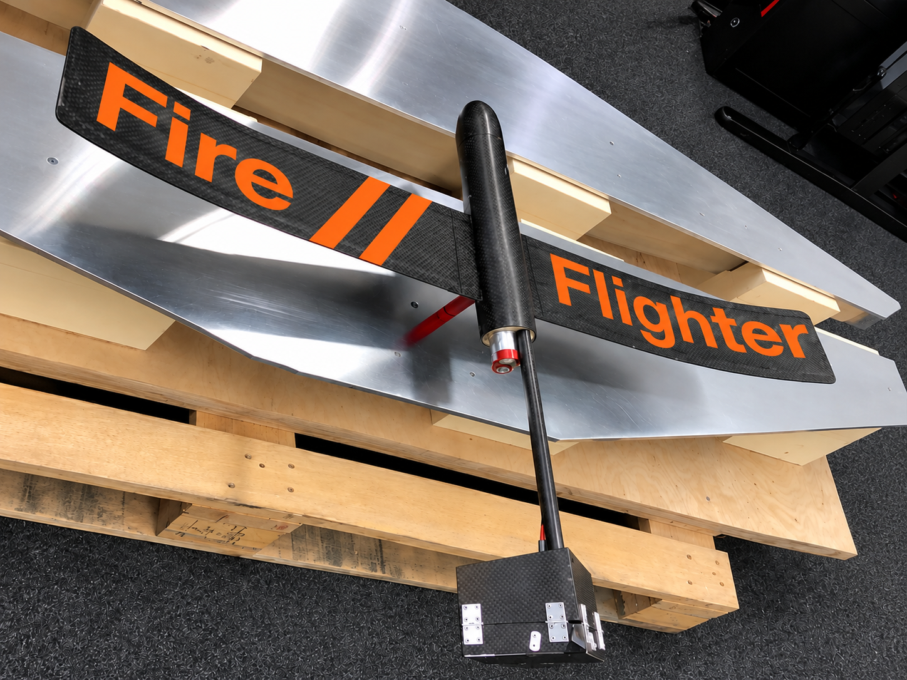
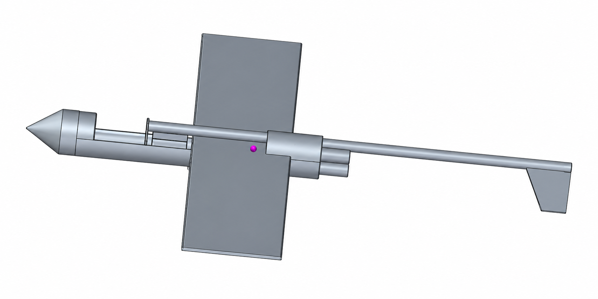
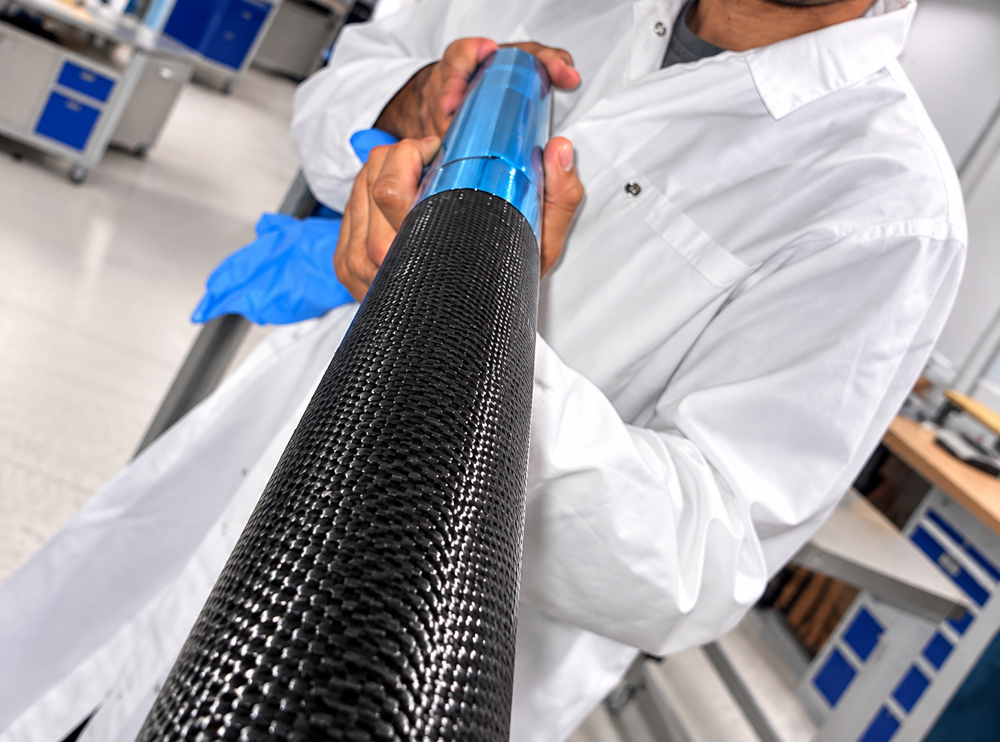
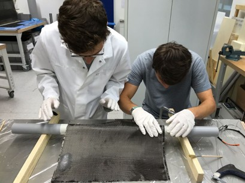
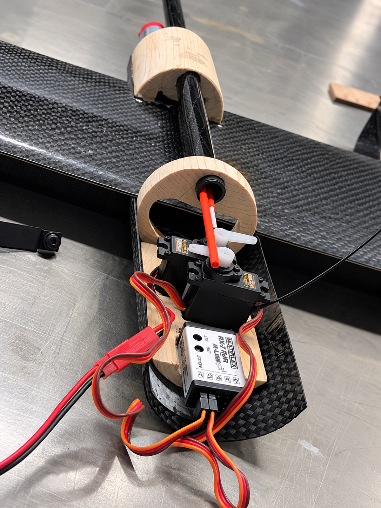
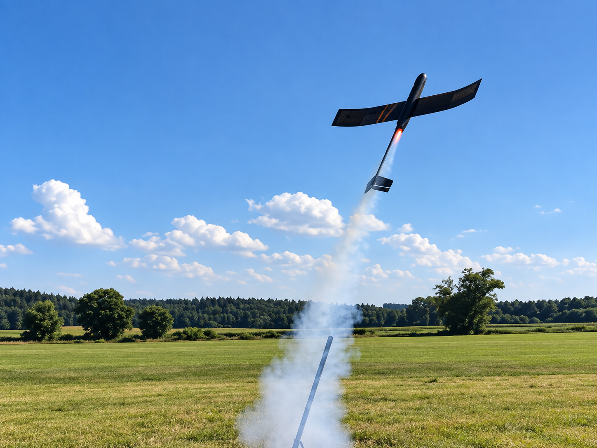

How do you design a rocket that survives launch — and then flies like a glider?
As part of a four-person university team, I contributed to the development of a lightweight rocket-powered glider combining structural design, flight calculations, composite manufacturing and remote-controlled flight. The project took the concept from initial engineering calculations and CAD to a physical carbon-fibre prototype.

The challenge
The project objective was to develop a lightweight aircraft that could first be launched vertically using a rocket motor and then transition into controlled gliding flight.
These two flight phases create very different engineering requirements. The structure needs to withstand the rocket launch while remaining light enough for efficient gliding afterwards. Centre of gravity, structural strength, aerodynamic stability and component weight therefore had to be considered together.
The project combined theoretical engineering with practical prototype development: calculations and CAD defined the concept, while composite manufacturing and component integration turned it into a physical aircraft.
Engineering the concept
Developed the aircraft concept in CAD
The geometry and arrangement of the aircraft were developed digitally before manufacturing, allowing the team to evaluate the overall configuration and component positioning.
Calculated centre of gravity
Component masses and their positions were considered to determine the centre of gravity for the different operating conditions of rocket launch and gliding flight.
Estimated rocket performance
The propulsion system and expected flight behaviour were analysed theoretically. The calculated maximum flight altitude was approximately 203 metres.
Checked structural loads
Critical structural components and connections were evaluated against the expected loads during launch and flight to support the lightweight design.
Improved flight stability
The aircraft geometry was refined during development. Among the design changes was the introduction of a V-shaped wing configuration to improve flight stability.

Lightweight construction
Carbon-fibre fuselage
Composite materials were used to create a lightweight fuselage while maintaining the structural performance required for the launch and flight phases.
Lightweight wings
The wing structure was developed with low mass as a central design requirement, supporting the transition from powered rocket flight to gliding.
Carbon-fibre components
Additional carbon-fibre parts and plates were manufactured as part of the prototype and integrated with the remaining structural components.
Propulsion integration
The rocket motor and its supporting structure had to be incorporated into the aircraft while maintaining the required geometry, centre of gravity and structural integrity.


From CAD to prototype
A major part of the project was translating the theoretical design into a manufacturable aircraft. Individual structural components were produced, assembled and combined with the propulsion and electronic systems.
The final aircraft had a mass of approximately 775 g, demonstrating how the lightweight design, composite structures and integrated components came together in the physical prototype.
The project therefore provided experience beyond pure calculation: design decisions had to work not only on paper, but also during manufacturing and assembly.

Flight test
The completed aircraft was ultimately launched using its rocket propulsion system and transitioned into gliding flight, providing a real-world demonstration of the developed concept.
Because I left Germany for my exchange semester in Johannesburg before the final production steps and launch, my personal contribution focused on the earlier engineering, design and manufacturing phases of the project.

Project outcome
One system, two flight phases. The project required balancing the requirements of a rocket-powered launch with those of a lightweight glider.
Engineering supported the design. CAD, centre-of-gravity calculations, flight calculations and structural considerations were used to develop the prototype.
Composite materials enabled lightweight construction. Carbon-fibre components were integrated into the aircraft to achieve the required combination of low mass and structural performance.
The concept became a real aircraft. The final prototype weighed approximately 775 g and was successfully taken from the engineering concept to an actual rocket launch and gliding flight.